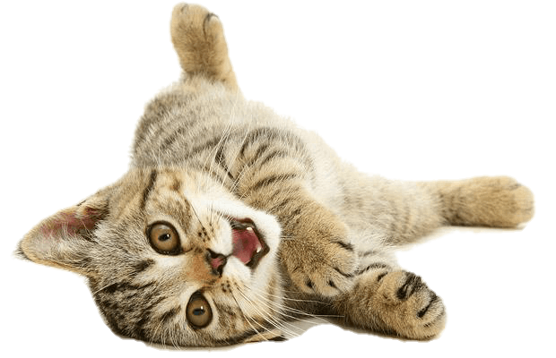
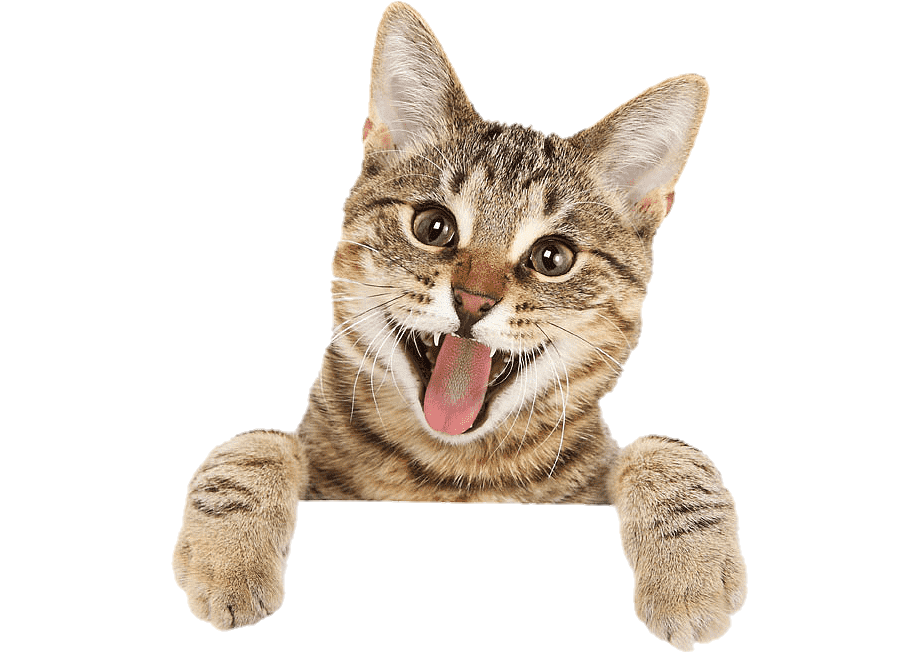
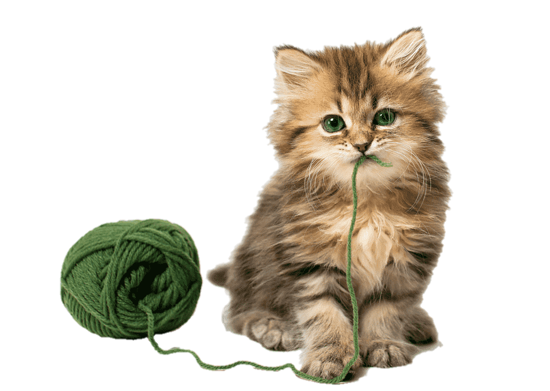

Sobre nosotros



.jpg)
1. Somos una organización protectora de animales especializada, en la ayuda a perros y gatos maltratados y/o abandonados; una organización argentina totalmente independiente que no recibe subvenciones de organismos oficiales, empresas ni partidos políticos. Nunca sacrificamos cachorros recién nacidos, ni animales cojos, etc.
2. Contamos con un centro veterinario en Mar Del Plata abierto al público, que destina sus ingresos íntegramente al cuidado de los animales abandonados. Nuestro campo de acción se divide en “directa” y “divulgativa”. La acción directa engloba tanto rescates de animales víctimas de maltrato y abandono, como el emprendimiento de acciones legales contra los autores de los delitos.
3. Todos los animales que acogemos reciben la debida atención veterinaria (analíticas, tratamientos, cirugías, etc.) y son identificados y esterilizados antes de emprender la búsqueda de adoptantes comprometidos a proporcionarles una vida sana y feliz. Defendemos el “sacrificio cero”. Esto significa que establecemos una línea muy clara entre “el sacrificio” y “la eutanasia”.
4. La acción divulgativa promueve campañas en diferentes medios de comunicación con el claro objetivo de educar a la sociedad en el respeto hacia los animales y los derechos que tienen a disfrutar de una vida digna y saludable. También reclamamos una serie de derechos básicos para las personas responsables de perros y gatos, como el libre acceso a espacios públicos.